TRIMUI SMART掌機的按鍵太少，導致司徒在玩NDS模擬器時，缺少一個可以換屏的按鍵，相當不方便，於是激起司徒改造的動力，一開始使用的按鍵如下圖：
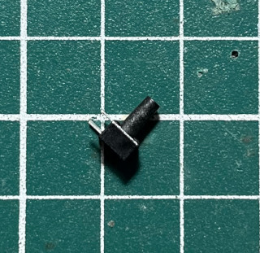
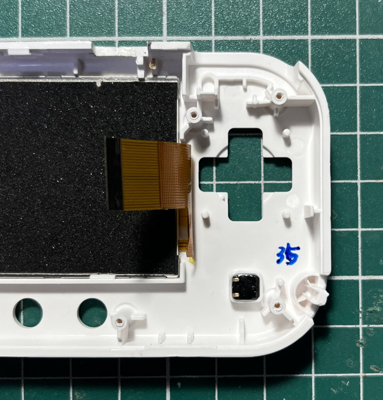
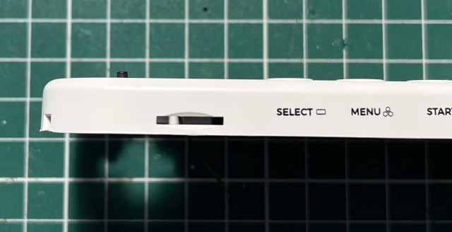
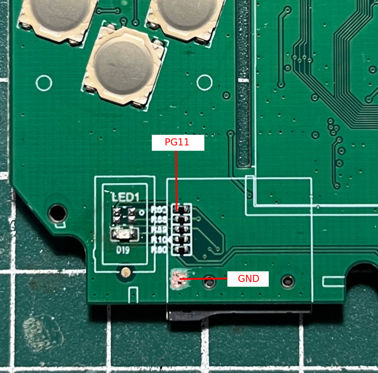
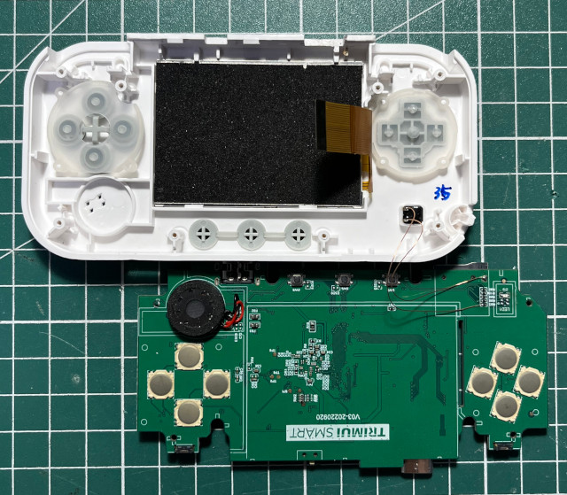
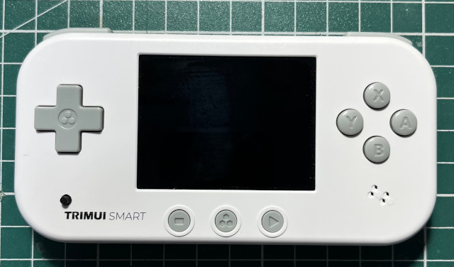
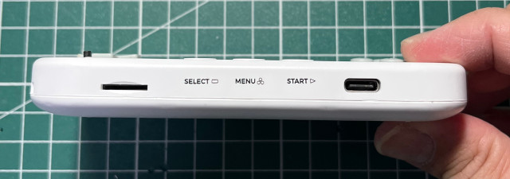
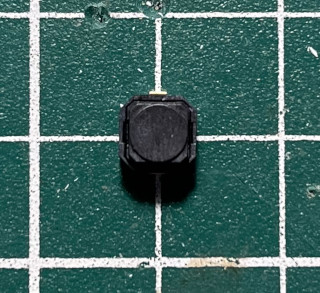
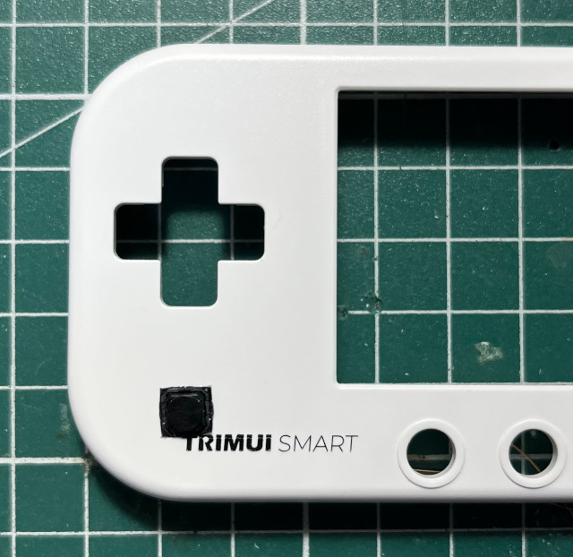
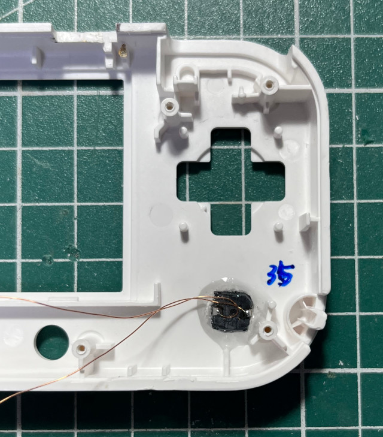
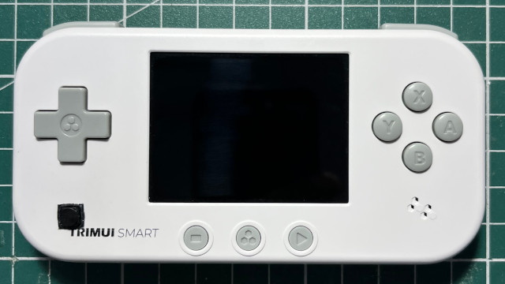
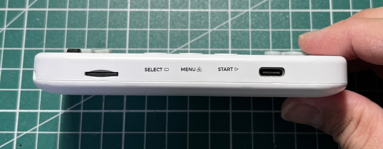
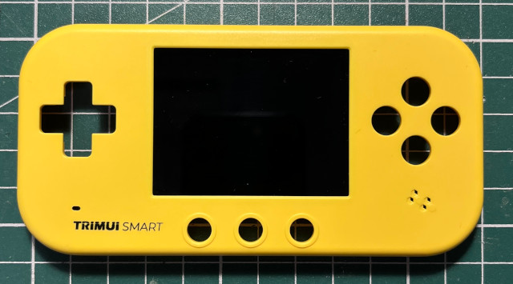
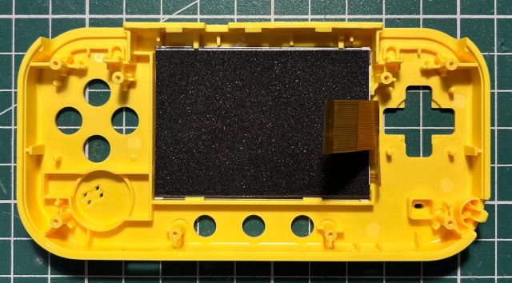
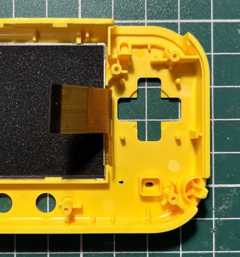
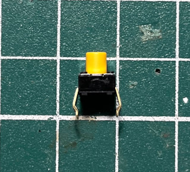
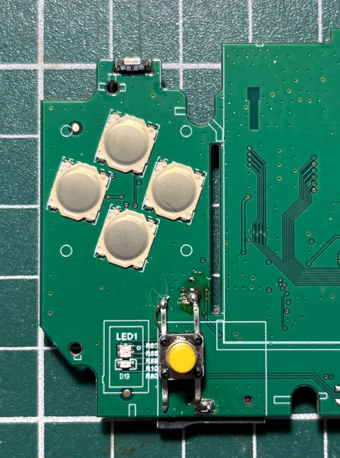
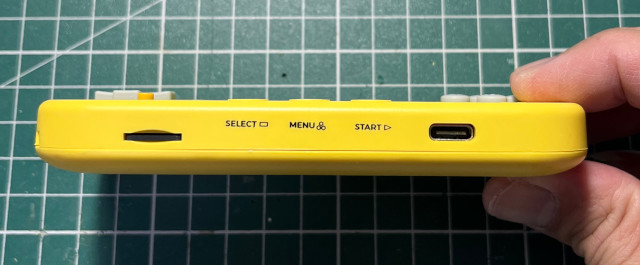
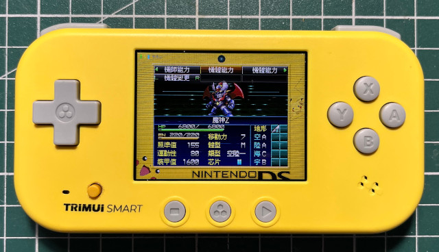
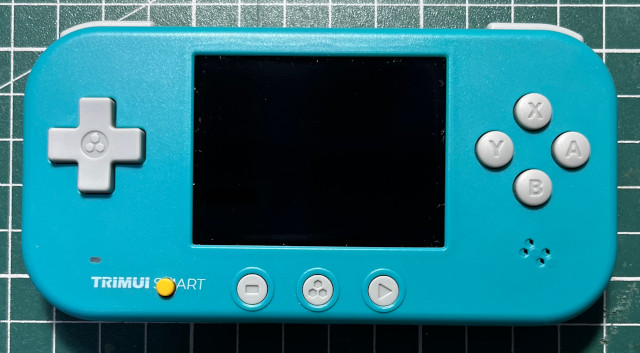
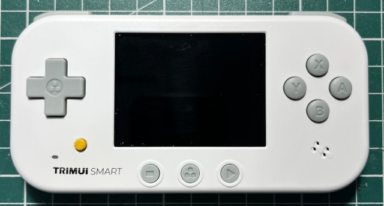
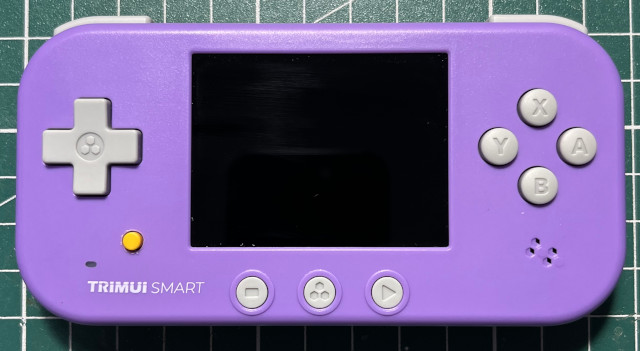
#include <stdio.h>
#include <stdlib.h>
#include <stdint.h>
#include <string.h>
#include <fcntl.h>
#include <sys/mman.h>
#include <unistd.h>
#include <time.h>
int main(int argc, char* argv[])
{
int fd = open("/dev/mem", O_RDWR);
uint32_t *cfg = NULL;
uint32_t *dat = NULL;
uint32_t *pul = NULL;
uint8_t *mem = mmap(0, 4096, PROT_READ | PROT_WRITE, MAP_SHARED, fd, 0x01c20000);
printf("mem 0x%x\n", mem);
cfg = (uint32_t *)(mem + 0x800 + (0x24 * 6) + 0x04);
dat = (uint32_t *)(mem + 0x800 + (0x24 * 6) + 0x10);
pul = (uint32_t *)(mem + 0x800 + (0x24 * 6) + 0x1c);
printf("cfg 0x%x\n", *cfg);
*cfg &= 0xffff0fff;
*pul |= 0x00400000;
while (1) {
usleep(1000000);
printf("dat 0x%x\n", *dat);
}
munmap(mem, 4096);
close(fd);
return 0;
}